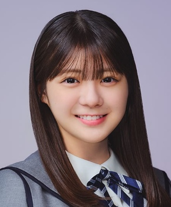

冨里奈央とみさとなお

君ロス（2026年）・最新
乃木坂46 5期生 ・ 現役
センター曲：2曲（シングル表題曲センター：0曲） フォーメーション/歌唱参加：31曲
ライブ記録：センター 28公演・出演記録のある公演 142公演
ブログ記事：118件
学年：2006年度（同級生 全12人を見る）
フォーメーション統計：登場 23曲・フロント（1列目）8曲
よく隣になるメンバー：弓木奈於（3回）、金川紗耶（3回）、池田瑛紗（3回）
センター曲
推しに登録すると、トップページに「推しの新着」（最新のブログ）が出ます。
歴代アー写など（14枚）
タップすると上の写真が切り替わります。上の写真をタップすると最新のアー写に戻ります。